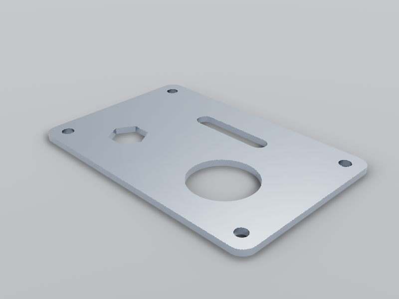
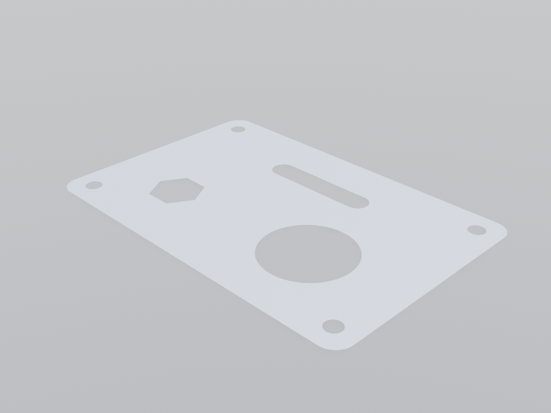

plate
A flat mounting plate drawn on z = 0: a 2D model to export as DXF (laser / waterjet), and the same profile extruded as a 3 mm part. Run: cad run examples/plate.ts (builds both) cad run examples/plate.ts --export (also writes out/plate.dxf and out/plate.step)


Source
Run it with cad run examples/plate.ts.
// A flat mounting plate drawn on z = 0: a 2D model to export as DXF (laser / waterjet), and the
// same profile extruded as a 3 mm part.
// Run: cad run examples/plate.ts (builds both)
// cad run examples/plate.ts --export (also writes out/plate.dxf and out/plate.step)
import { circle, model, rect, regularPolygon, slot } from "@cad/sdk";
const W = 120, H = 80;
function outline() {
const corners = [[-1, -1], [1, -1], [1, 1], [-1, 1]].map(([sx, sy]) => circle(2.75).at(sx! * (W / 2 - 8), sy! * (H / 2 - 8)));
return rect(W, H, { radius: 6 }).hole(
...corners,
slot(40, 8).at(0, 20), // a cable slot
regularPolygon(9, 6).at(-30, -15), // a hex pocket for a nut
circle(15).at(25, -12), // a fan opening
);
}
export const plate2d = model("plate_2d", () => outline());
export const plate = model("plate", () => outline().extrude(3).label("plate", { color: "#9aa3ad", material: "aluminum" }));
if (import.meta.main) {
const flat = await plate2d();
const solid = await plate();
if (process.argv.includes("--export")) {
console.log("wrote", ...(await flat.export("out/plate.dxf")));
console.log("wrote", ...(await solid.export("out/plate.step")));
}
}